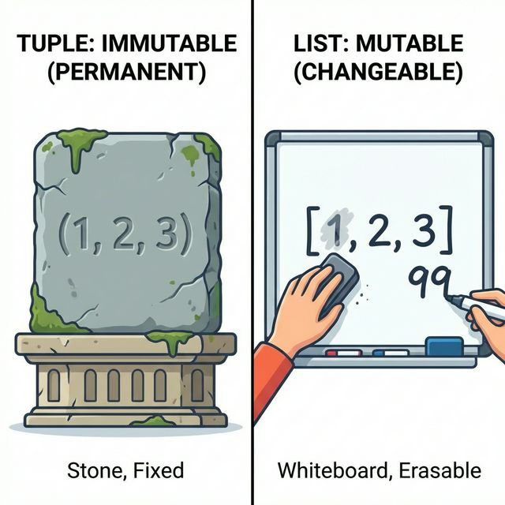
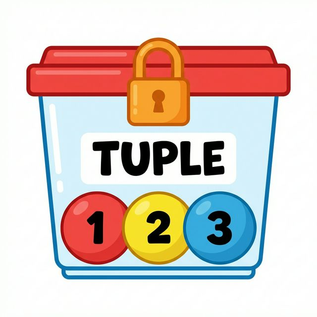

3주차 2강: 파이썬 튜플 심화 (Python Tuple Deep Dive)
학습목표: 튜플의 불변성(Immutability)이 왜 중요한지 이해하고, 패킹과 언패킹을 활용하여 코드를 간결하게 작성하는 방법을 배웁니다.
3.2.1. 튜플의 특징: 절대 변하지 않는 약속 (Immutable)
튜플은 리스트와 비슷해 보이지만, 한 번 생성하면 수정할 수 없다는 가장 큰 차이점이 있습니다.
[그림 1] 리스트 vs 튜플의 차이
리스트는 자유롭게 내용을 바꿀 수 있는 칠판이라면, 튜플은 한 번 새기면 바꿀 수 없는 비석과 같습니다.

graph TD
subgraph List ["리스트: 칠판"]
L1["[1, 2, 3]"] -->|"수정 t[0]=99"| L2["[99, 2, 3]"]
end
subgraph Tuple ["튜플: 비석"]
T1("(1, 2, 3)") -->|"수정 시도"| Error("Error(에러 발생!)")
end
style List fill:#e6f3ff,stroke:#333,color:black
style Tuple fill:#fff0f0,stroke:#333,color:black
style Error fill:#f00,stroke:#333,color:white
3.2.1.1. 불변성 (Immutability)이란?
‘불변성’은 값이 변하지 않는다는 뜻입니다. 튜플은 생성되는 순간 그 안의 내용물이 고정되어 버립니다.
- 읽기 전용 (Read Only): 값을 읽을 수는 있지만(
print(t[0])), 수정하거나 삭제할 수는 없습니다. - 안전 장치: 실수로 데이터가 변경되는 것을 막아줍니다.
t = (1, 2, 3)
print(t[0]) # 1 (읽기는 가능)
# t[0] = 99
# TypeError: 'tuple' object does not support item assignment (수정 불가능!)
3.2.1.2. 다른 언어의 상수(Constant)와 비교
- C/Java의 상수: 변수 하나(
const int a = 10)를 못 바꾸게 잠급니다. - 파이썬의 튜플: 여러 개의 값을 묶어둔 ‘데이터 보관함’ 자체를 잠그는 것과 같습니다.
[그림 2] C/Java의 상수: 1개만 잠금
변수 상자에 자물쇠가 걸려있어 값을 바꿀 수 없습니다.
[그림 3] 파이썬 튜플: 보관함을 잠금
변수는 자유롭지만, 데이터가 들어있는 상자(튜플)가 잠겨있어 내용물을 바꿀 수 없습니다.

- 파이썬에는 변수 자체를 상수로 만드는 문법(
const)은 없지만(관례적으로 대문자 사용), 튜플을 사용하면 데이터의 묶음(구조)을 안전하게 보호할 수 있습니다.
3.2.1.3. 언제 튜플을 사용해야 하나요?
- 데이터 무결성 (Integrity): 프로그램 실행 중에 값이 바뀌면 안 되는 중요한 상수(설정값, 좌표 등)를 보호할 때.
- 구조체 대용 (Struct): 서로 다른 데이터 타입을 묶어서 의미 있는 단위로 만들 때. (예:
(이름, 나이, 키)->('Alice', 25, 165.5)) - 딕셔너리 키 (Key): 리스트는 키로 쓸 수 없지만, 튜플은 쓸 수 있습니다. (Hashable하기 때문)
3.2.2. 패킹과 언패킹 (Packing & Unpacking)
파이썬에서 가장 우아한 문법 중 하나입니다.
[그림 4] 패킹과 언패킹의 원리
패킹은 여러 물건을 가방 하나에 싸는 것이고, 언패킹은 가방에서 물건을 꺼내 각자 나누어 가지는 것입니다.
graph TD
subgraph Packing ["1. 패킹 (짐싸기)"]
Item1[1] & Item2[2] & Item3[3] --> Bag((튜플))
end
subgraph Unpacking ["2. 언패킹 (짐풀기)"]
Bag2((튜플)) --> Var1(변수 x) & Var2(변수 y) & Var3(변수 z)
end
style Packing fill:#f9f9f9,stroke:#333,color:black
style Unpacking fill:#f9f9f9,stroke:#333,color:black
style Bag fill:#ff9,stroke:#333,color:black
style Bag2 fill:#ff9,stroke:#333,color:black
3.2.2.1. 패킹 (Packing)
여러 개의 값을 하나의 튜플로 묶는 것입니다. 괄호 ()를 생략해도 자동으로 튜플이 됩니다.
a = 1, 2, 3
print(a) # (1, 2, 3)
3.2.2.2. 언패킹 (Unpacking)
튜플에 묶인 값을 여러 변수에 한 번에 할당합니다.
x, y, z = (10, 20, 30)
print(y) # 20
활용 예시: 두 변수의 값 교환하기 (Swap)
a = 10 b = 20 a, b = b, a # (20, 10)이라는 튜플을 만들었다가 다시 품 print(a, b) # 20 10
3.2.3. 효율성: 리스트 vs 튜플
튜플은 리스트보다 메모리를 적게 차지하고, 생성 속도도 약간 더 빠릅니다.
[그림 5] 메모리 효율성 비교
같은 데이터를 담아도 튜플이 더 가볍습니다.
graph LR
List["리스트: [1, 2, 3]"] --"기능이 많아서"--> Heavy["무거움 (메모리 큼)"]
Tuple("튜플: (1, 2, 3)") --"기능이 단순해서"--> Light["가벼움 (메모리 작음)"]
style List fill:#eee,stroke:#333,color:black
style Tuple fill:#eee,stroke:#333,color:black
style Heavy fill:#fcc,stroke:#333,stroke-width:2px,color:black
style Light fill:#ccf,stroke:#333,stroke-width:2px,color:black
import sys
ls = [1, 2, 3, 4, 5]
tp = (1, 2, 3, 4, 5)
print(sys.getsizeof(ls)) # 리스트 크기 (Byte) - 예: 104
print(sys.getsizeof(tp)) # 튜플 크기 (더 작음) - 예: 80
결론: 수정할 필요가 없는 데이터라면, 리스트 대신 튜플을 사용하는 것이 파이썬스러운(Pythonic) 코드입니다.
정리 (Summary)
이 강의에서 배운 핵심 내용을 요약해 봅시다.
- [핵심 1]: 튜플은 수정 불가능(Immutable)한 리스트입니다. (데이터 보호)
- [핵심 2]: 리스트보다 메모리를 적게 쓰고 속도가 빠릅니다.
- [핵심 3]: 패킹과 언패킹을 통해 여러 변수를 한 번에 다룰 수 있습니다.